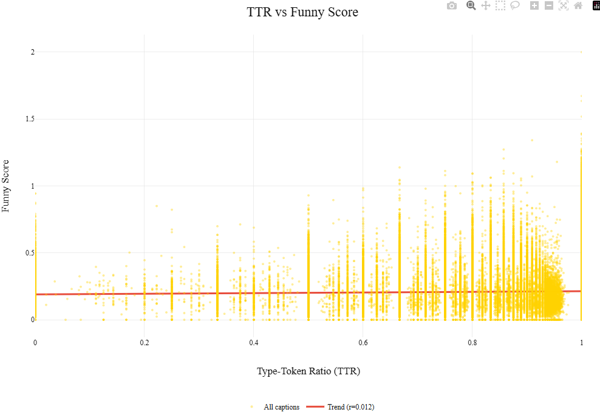

"A day without laughter is a day wasted" Charlie Chaplin once said. We say: a day analyzing 2.2 million New Yorker captions is a day spent finding out why your joke didn't win.
If you’re willing to learn how to be funny the hard way, welcome aboard.
We analyzed over 2,292,678 captions to find the secret formula of comedy.
The Research Questions
We didn't just doom-scroll through cartoons; we had a plan. A scientific plan. (Mostly). Here is what we set out to discover:
Structural Analysis: Are short jokes funnier, or do we just stop reading after ten words? What about the richness of the vocabulary?
Theme Analysis: What themes have a tendency to be ranked better? Do image and text themes need to match, or is randomness the key to success?
Semantic Analysis: Which humor type reigns supreme: irony, absurdity, wordplay, or maybe just chaos ?
Temporal Analysis: Is comedy timeless, or just what happens when people have too much free time and too much confidence?
The Data: A Catalog of Failed Dreams
Or: A comprehensive archive of 2.9 million people briefly convinced they are funny.
384 Cartoons ~2.9 million Captions (Desperate attempts at humor) ~287 million Votes (Harsh truths)
Every week, the New Yorker throws one cartoon at the public. Thousands of captions follow. Only a handful survive. The rest are data.
The Ingredients
The Cartoons:
Surrealist drawings where the Grim Reaper is wearing a tracksuit, a snowman works retail, and a teddy bear is questioned on the witness stand. You know, high art.
The Captions:
An endless scroll of puns. Some are gold. Most are just sentences that end with an exclamation point for no reason.
The Verdicts:
Crowdsourced judgment delivered with brutal efficiency:
Unfunny (Roughly three out of four captions die here)
Somewhat Funny (A polite nose exhale)
Funny (Actual laughter, statistically rare)
The Metadata:
Detailed descriptions of the scene in the image, and what's uncanny about it. Because computers have no soul and need to be told that a dog sitting at a bar is unusual.
Why We Analyzed This
With millions of captions and votes, this dataset allows us to quantify humor,
compare audience taste, and confirm a long-held suspicion:
comedy is subjective, but not that subjective.
Lesson 1 : Structure, the skeleton of comedy
Brevity is the Soul of Wit.
You know that friend who takes ten minutes to get to the punchline ? Please, do not be that friend. Let's take a look at what science says : our structural analysis revealed a groundbreaking truth. Size doesn’t matter.
Average Word Count
From the graph you might say there is a peak at 10 words, but don’t be fooled:
the cloudiness of the data means there is no correlation between the success metric
and the amount of words used.
In other words : We statistically proved that there is no link between our success metric, meaning our funny score, and the amount of words used.
In case you were wondering, we did the same study per theme, to see whether when talking
about politics or food you ought to keep it short and sweet. And, plot twist, there is no secret recipe there either...
So please, believe us when we tell you to trust your gut and not follow a single number,
just do not do ramble on. Do not be that friend.
Secondly, we hypothesized that the funniest people might employ a complex vocabulary. To test this, we calculated the Type-Token Ratio (TTR) to measure vocabulary richness across millions of entries.
Mathematically (and very scientifically, of course), the TTR is expressed as:
$$
\mathrm{TTR} = \frac{V}{N}
$$
Where V is the number of unique words (types) and N is the total number of words (tokens) in the text. One is solely unique words, zero is solely repeated words.

Figure 1: Correlation between word count and success metric.
The Result: Everyone is Shakespeare. Or everyone is a five-year-old. The average TTR was 0.99 across the board. There is effectively no difference in vocabulary richness between the winners and the losers. To illustrate our point, look at the above figure, that red line looks pretty flat huh ?
"Using sesquipedalian verbiage does not augment comedic efficacy."
Translation: Big words don't make you funny, nor do simple words.
Try It Yourself
Think you can beat the algorithm? Test your caption below.
Lesson 2: Themes, Comedy's Comfort Zones
Comedy loves familiar territory. Relationships, family, social awkwardness, technology—these themes keep coming back for a reason: they’re relatable, emotionally charged, and easy to recognize.
In this lesson, you’ll learn which topics are comedy’s safe spaces.
This chart is basically a cheat sheet for what New Yorker captions keep talking about. Each big bubble is a popular theme, and the smaller bubbles inside it are the words that theme reaches for when it’s trying to make sense.
The rule is simple. Big bubbles mean lots of captions. Big little bubbles mean important words. Not “funniest,” just the ones doing the heavy lifting behind the scenes.
Click around. Poke the bubbles. You’ll quickly notice something comforting: even comedy has habits.
Most jokes come from the same ideas.
Once you know what repeats, you’re halfway to funny.
So, if you thought you were going to be the first person to make a joke about Trump... Think Again.
Having identified the main themes in both images and captions, we can now look at how they interact.
To understand how image themes and caption themes interact, we turn to the alluvial graph below.
At first glance, the diagram looks like spaghetti. This is accurate. It’s showing many things at once.
(To avoid complete chaos, only the strongest connections are shown.)
Image themes live on the left; caption themes live on the right. The flowing bands between them represent captions
linking an image theme to a caption theme. Thicker bands mean this pairing happens more often.
Take T68: restaurant as an example. This image theme appears in 44,525 captions in total.
These captions then fan out across several caption themes. One particularly confident connection links
T68: restaurant to T28: bakery, accounting for 8'289 interactions between the two. Hover on this connection, and look for yourself.
We can also see that T28: bakery is a popular-ish caption theme, as it is connected to 15'901 captions.
The plot also reveals a tendency that some themes are strongly related to themselves, thus self-pairing.
This may not be groundbreaking, but it is reassuring: sometimes, a restaurant remains committed to being a restaurant.
To visualize this better, let's take at this heat map below :
Lesson 3 : Semantic Analysis, Meaning Under Examination
Semantics is just what words mean.
Not how fancy they sound.
Not how they’re arranged.
Just: when you say something, what are you actually talking about?
To impose some order on the famously unruly universe of caption contests, we used Berger’s humor categories—borrowed from a man who looked at comedy, thought “this needs diagrams,” and wrote an entire book about it.
The categories:
Language: jokes that live by words alone—irony, puns, allusions, repartee, wit, and ridicule.
Logic: jokes powered by ideas rather than phrasing—absurdity, coincidence, conceptual surprise, and misunderstandings.
Identity: jokes that turn the lens on people and personas—parody, existential humor, condescension, self-deprecation, and other small human failures.
Action: jokes that skip language entirely, relying on physical or non-verbal cues like awkward bodies, odd expressions, clumsiness, or general chaos.
Using Ollama and the gpt-oss:120b model (Fancy words just to mean....AI), we analyzed the 25 best and 25 worst captions from each contest—a practical compromise given the computational cost. Captions could belong to multiple categories, with the model assigning percentages accordingly.
References:An Anatomy of Humor, Arthur Asa Berger (1993)
Our results point to a humbling truth: there is no cheat code for comedy. All humor categories perform about the same, which means being funny is less about what kind of joke you tell and more about not messing it up. This is visible by taking a look at those bar plots : They all yield similar results in terms of mean funniness.
Wondering how these categories interact ? Let's take a look at our map below :
One pattern does stand out on our second plot. Language and Logic don’t like sharing the spotlight, with a mediocre score of -0.87. What does this mean ? Either a joke is in the Logic category, or it is in the Language category. Jokes usually twist words or ideas, not both. Try to be clever in two ways at once and the meaning trips over itself. Comedy, like traffic, works best when everyone stays in their lane.
Also, look at the line or column about the Mean Funniness ! Notice anything ? Right, those numbers are tiny. Meaning, there is no clear winner for the Funniest-Semantic-Category Award, once again.
Further very scientific analysis has proven that Identity and Action mostly play supporting roles. A little self-awareness or physical awkwardness happens often, but rarely carries the whole joke unless someone is actively falling over.
Long story short: Keep it clear, keep it simple—and remember: if the audience is busy decoding your joke, they’re not laughing at it.
Lesson 4: Wait for it....Timing is Everything
They say comedy is about timing. In the case of the New Yorker Caption Contest, it's about being stuck at home with nothing else to do.
We plotted the number of captions submitted over time, and the results are about as unsurprising as you'd expect.
Notice that massive increase in yellow? Yes, that's circa 2020... that's the COVID-19 pandemic. Apparently, when the world stops turning, everyone decides they are a comedian.
Still, this doesn’t quite settle the case for timing.
Popularity spikes, funniness drifts, but correlation remains hard to confindently establish.
Maybe the real story isn’t when people submit captions—but what they’re writing about.
So let’s put the top 10 caption-themes in motion.
Below, they race through time according to their mean funniness.
Place your bets !
If you put your money on Justice, congratulations.
Its sharp rise between 2018 and 2019 coincides with a period dominated by public reckonings, trials, and questions of accountability.
The most immediate association is the #MeToo movement, sparked by Alyssa Milano’s call to action and the Harvey Weinstein case—though confirming a direct causal link would require a far richer external dataset.
Also, peep the COVID-19 theme in 2016 ! Surprisingly, the comedians did not acquire prophetic powers overnight.
The so-called theme is merely a semantic umbrella for harmless words like sunscreen... or vaccine....and masks — terms that aged, unfortunately, very badly.
So… maybe next time there’s a global catastrophe or a societal wake-up call, you should submit a caption.
The Perfect Recipe
So, how does one win the New Yorker Caption Contest?
After millions of captions, hundreds of cartoons, and an unreasonable number of statistical tests,
the answer turns out to be both disappointingly simple and mildly comforting.
Keep it short and simple. Fancy vocabulary won’t save a weak idea, and plain words won’t doom a strong one. Same foes for brevity : Size doesn't matter, but please don't be that friend.
Keep it comfortable. Don't overthink it : use the usual themes for your caption.
Keep it singular. Jokes work best when they commit to one clear idea instead of juggling multiple meanings.
Be lucky. Timing, taste, and the collective mood of thousands of strangers matter more than we’d like to admit.
And if all of this feels a bit unsatisfying, that’s because humor is stubbornly hard to quantify — which may be its greatest feature.
"Analysis kills spontaneity. That's why we did it."
Final Examination
Have you been paying attention? Let’s test it—with a final exam and no partial ECTS credits.
Which joke is (objectively) the funniest for this image?
Score: 0 / 0
What We Learned (The Hard Way)
Science is about trial and error. Mostly error.
Classifying Humor Types: We tried to categorize jokes into "Irony", "Dark Humor", and "Wordplay". Turns out, explaining a joke to an algorithm kills both the joke and the algorithm. We decided to pivot faster than a startup in 2020.
Context Analysis: We attempted to correlate humor with world events using the GDELT dataset, which is a huge database of human society. Then we discovered the dataset was 288GB. We decided that political stability is important, but preserving our RAM is importanter.
To Go Further
Our comedy career might be ending here, but the science goes on. If we had more time (and more RAM), we would:
Develop a "Funniness Score" Predictor: Train a model to rate your caption before you submit it, saving you from public embarrassment.
Analyze Visual Complexity: Does a simple drawing need a complex caption, or vice versa?
Finally crack the GDELT dataset, incoporate global news and cultural events to our analysis : Maybe next year, when hard drives are bigger.